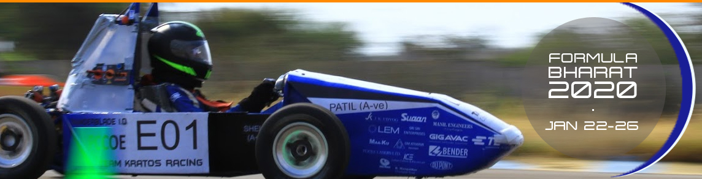
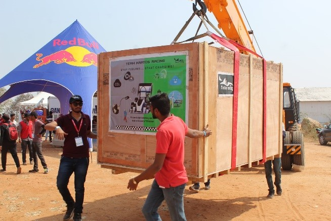
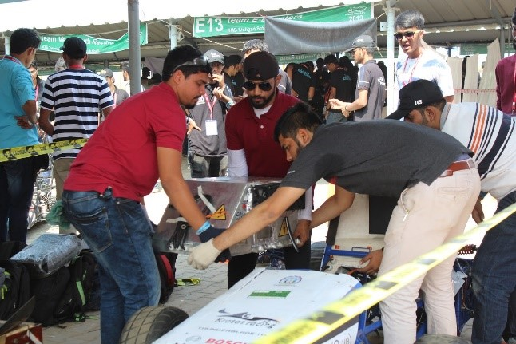
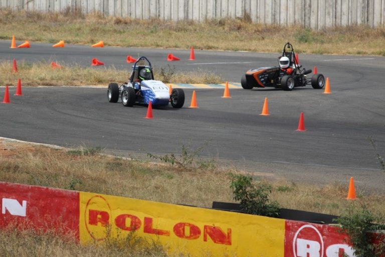

Day 0
(22nd Jan)
Day 1
(23nd Jan)
Day 2
(24nd Jan)
Day 3
(25nd Jan)
Day 4
(26nd Jan)
Day 5
(27nd Jan)
Formula Bharat 2019
What’s in the name? Well, It’s the event which comes once in a year for across 100+ teams in India who are very much excited to showcase their talent in every possible way. In other words, it’s a dream destination for upcoming engineers to Design, Develop and test a Formula 3 type race car prototype. Formula Bharat since then has been a platform for every aspiring engineer and with the course of time, Formula Bharat, this year organized its First ever ‘EV’ category for teams. Formula Bharat 2019 witnessed across 120 teams competing in CV whereas 19 teams competing in ‘EV’.
Formula Bharat 2019 was indeed a historic moment for the team as the team had shifted to an Electric vehicle (E.V) after competing in CV for the past 2 years at Formula Bharat. The journey of the team shifting from CV to EV was quite enthralling for all the members associated with the team. During this span, the team managed not only to design the first prototype but also manufactured, tested and validated some important parameters in just 8 months. All that the team left, to be conquered last year had all eyes set on that destiny, i.e. to cross the finish line of endurance. Thus, Team Kratos racing electric came up with its first E.V prototype race car ‘THUNDERBLADE V 1.0’
Day 0
(22nd Jan)
This year, Day 0 was the day when the team arrived in Coimbatore early morning with the pre-registrations scheduled in the evening. Thus, there was no time for teams to assemble their vehicle on Day 1. Keeping the fact in mind, Thunderblade was assembled in the workshop itself and taken to the venue in Coimbatore. On the day of arrival in Coimbatore, few team members carried out a local market survey of the industrial area in order to avoid any kind of emergency during the event.
Day 1
(23rd Jan)
There was a significant change in Formula Bharat as the Technical inspection was scheduled on Day 1 itself. Thus, teams had to be ready for the tech inspection on day 1 itself. The schedule was quite tight. On day 1, as soon as the car got unloaded, the pit was arranged and the team went in for accumulator inspection. There was so much efficiency and quickness in the team that we were the first team to go out for the accumulator inspection.
 By the end of day 1, the team had almost done with the accumulator inspection. Due to unavailability of the charging station, judges weren’t able to test the shutdown circuit which further delayed the accumulator inspection. Day 1 ended on a high note for the team!
Day 2
(24th Jan)
Day 2 began with the team lining in for the electrical inspection. The team also had a business Plan presentation scheduled at 2:30 pm. This year the judges who were our investors were impressed by our finances, overall idea, market research, presentation following our presentation skills. By the end of the day, accumulator inspection, the electrical inspection was done and mechanical inspection was attempted with mechanical inspection had some minor issues to be solved.
The issues that the team faced during the mechanical inspection were:
- Push bar holding mount needed to be changed.
- Water drain holes needed to be drilled where any type of fluid could possibly accumulate.
- There were many sharp edges which the team had to remove.
Overall day 2 was a good day to end but the team was on high motivation as the static events approached the next day. Brainstorming sessions were carried out by the team after day 2 was over.

Day 3
(23rd Jan)
Day 3 it was at Formula Bharat 2019. This was one of the most important days as major static events were scheduled which included the Design event, Cost event and also Fabheads Finals. The whole team was indeed pumped as it looked to give out their best in the static events. The team lined up for Mechanical scrutineering as soon as the bay got open and got all the three stickers of Accumulator, electrical and mechanical inspection in the morning. Followed by the technical inspection, the team had no time to waste as the car went into the design bay for the design presentations scheduled at 10 am.
All that the team knew was about the objective of Thunderblade and with respect to comply each and every objective with every system was our goal. The team stuck to the objectives, and thus had a very healthy conversation during the event. There were certain areas of improvement but judges were overall satisfied with the team’s efforts.Right after the design presentation was the cost and manufacturing event from 11 am to 12 noon. Cost and manufacturing event started with the judges having a look at the vehicle and asking questions related to the BOM. Right after BOM judges asked some questions about CBOM of chassis and body works and tested the manufacturing knowledge and depth of understanding of various manufacturing process. Followed by CBOM judges asked a few points about cost understanding before concluding the session. Cost and manufacturing event overall went good with certain areas of improvement such as accuracy of BOM, etc.
As we all know that formula Bharat was hosting EV category for the first time, the team had no idea about the setup which was going to be used for the rain test. Subsequently, it was one of the tests which everyone in the team feared. The team hadn’t conducted a rain test before the event, so everyone carried that level of sub-consciousness when it came to the rain test. The team went in for rain test at around 2 pm. The ‘only’ thing everyone could see was the Red TSAL glowing during the rain test. Holding our breath, for nearly 2 minutes post rain test, everyone was in joy when the team got the rain test cleared. All we could hear was the applause from everyone out there and one same old chant,
We are TKRWithout wasting any further time, the team got lined up for the brakes test. By the time team was getting lined up for brakes test, it was announced that the team had been selected for the business finals. It was a proud moment indeed for the team aiming for the first reward at sight. The team couldn’t clear the brakes test by evening as per plan, but there was nothing to be let down of, the team had a very great day.
Day 4
(26th Jan)
Day 4 was a busy day for the team. As the team aimed to clear the brakes and attempt 3 of the dynamic events today. The team lined up for brakes and got them cleared in the very first attempt. The team was very happy to complete with the technical inspection and now it was ready for the dynamic events. As soon as the brakes were cleared, the team quickly had a short testing session in the testing area before it lined up for Skid Pad event on the other side. It was a very proud moment for the team and everyone out there as Thunderblade V 1.0 was ready to go on its wheels for the very first time. By the afternoon the team had done with skidpan with the best timing of 5.8 sec and 6.3 seconds in acceleration. For any dynamic event, the car should be technically and electrically clear (for safety), here we were the only team who cleared the inspections and attempted the autocross. The whole team was present to see the car take a lap for the first time. Our team was the only team lined up and ready for autocross. The THUNDERBLADE proved itself, given a belief of all the efforts put in by the students this year as it stood first not only in electric vehicles but also in combustion cars, beating the fastest combustion car by 11secs and creating a benchmark. Thunderblade V 1.0 recorded the fastest autocross timing of 1 minute 44 seconds. The day ended with the distribution of statics awards. That day, that moment, our first event objective was achieved as the team bagged a 1st place in Design event followed by a runner-up place in Business plan and 3rd place in Cost and manufacturing. A day to remember before the final day as the team called off the day after charging the accumulator.
Dynamics Event
Autocross event
Day 5
(27th Jan)
The day had arrived-the final day, what we left behind the previous year we were ready to conquer it this year. The team was already having anxiety along with confidence and yes, it was our turn arrived, leaving everyone in mere awe! Everything just came down to this one moment, where all the hardships and pain was felt. It wasn’t only a chance to prove our worth but also a chance to write a legacy along as the first EV team to ever cross the finish line of endurance. Abhishek Patil was our first driver and Shubhaang Digge drove the latter half and every effort, every brainstorming session, all the pain was justified when the THUNDERBLADE crossed the chequered flag and the team broke down in tears, tears of happiness! The track witnessed its first run of an ELECTRIC RACE CAR where the tracks and pits echoed “KRATOS” and “THUNDERBLADE”. Moment of gratification!
“No journey is complete without friends” we made several new friends there with our fellow teams and competitors many experiences were shared and new memories were created. All of these merry memories did not stop and were followed by the award distribution ceremony! Here at Formula Bharat, it a mere quest of engineering design and application where, The team bagged all dynamic awards which included
The Victory
Static Event Awards
Engineering Design- 1st Business Plan- 2nd Cost and Manufacturing- 3rdDynamics Event Awards
Skid-pad- 1st Autocross- 1st Acceleration- 1st Endurance- 1st Energy Efficiency- 1stEvent Highlights
The only Electric Vehicle to participate in all dynamic events and without any penalties. The team to attain the highest ever total in any Formula Student event – 943/1000 Faster than the fastest combustion vehicle with a 12 seconds faster Autocross lap.And YES! We achieved it all. All might be wondering what’s next now? Well, here at Team Kratos Racing There’s no stopping, as the team gears up again for the next season with the same enthusiasm, dedication, and goal!